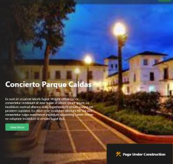

Proyectos

MamaTest
MamaTest es un proyecto con el propósito de ayudar a las mujeres con la temprana detección de cancer de mama, y de esta manera llevar un control de como se debe hacer el autoexamen.
Este proyecto cuenta con dos usuarios, asi se podra agendar citas y el usuario medico tendra un control tambien detallado de los pacientes.
Activate
Actívate busca unir a personas con ideas afines en actividades compartidas para mejorar su bienestar mental. Es una aplicación para conectar personas con intereses compartidos (por ejemplo, la aplicación permite usar la distancia / rango de área preferida como parámetro). Actívate se diferencia de una herramienta típica de redes sociales porque no se basa en conexiones conocidas. Las personas usan la aplicación y crean o se unen a un evento (por ejemplo, discusiones sobre películas o pasear perros) en una ubicación determinada.